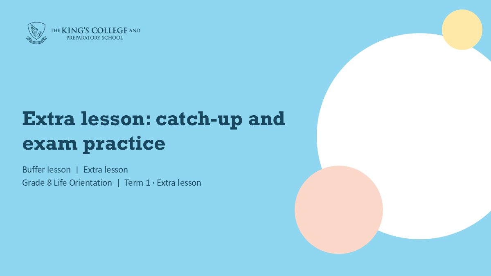

Term 1 · Extra lesson · Extra lesson: catch-up and exam practice
Extra Lesson: Catch-Up and Exam Practice
Start Here
Today I Will
- Catch up anything I missed
- Practise exam questions on one topic set
- Mark my set and plan what to revise
Think first
Which Term 1 topic do you feel least ready for?
Words to Know
| Word | Meaning |
|---|---|
| Exam practice set | A group of questions at the back of your Activity Book. Do one set, then mark it. |
| Bloom's level | The kind of thinking a question needs: remember, understand, apply, analyse, evaluate, create. |
| Memo | The marking guideline with the answers and how marks are given. |
| Reflection | Looking back at your marks to plan what to improve. |
Slides

Notes
Choose Your Task
- Missed a lesson?: Catch up the activity you missed first (ask your teacher which one).
- Up to date?: Do ONE exam practice set at the back of your Activity Book.
- Finished the set?: Mark it with the exam bank memo on Google Classroom.
- Marked?: Fill in the STOP box, then read the Handbook pages for the topics you got wrong.
Remember
One set at a time: do it, mark it, learn from it.
Finished Early?
Exam practice
Do ONE set of the exam practice bank at the back of your Activity Book.
- Choose the set for the topic you feel least ready for.
- Answer it using the mark allocations.
- Mark it with the exam practice memo on Google Classroom.
- Fill in the STOP box before you start another set.